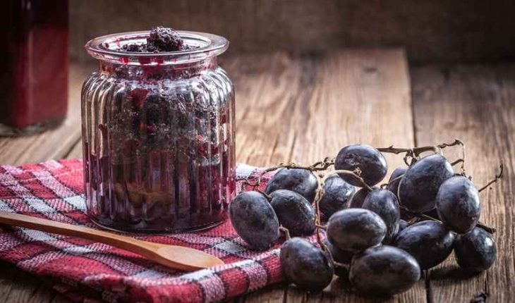

Grape jam
Ingredients

- 300g Of isabella grapes.
- 200g Of sugar (1 cup).
- 1 Unit of Lemon.
Steps to follow
- Before making the grape marmalade, the first step is to prepare all the ingredients.
- In a pot add the washed grapes with peel, sugar and lemon juice. Mix everything very well.
- Cook over low heat, stirring constantly to undo the grapes.
- Continue cooking for about 20 minutes. We'll know that the jam is ready when we take a spatula and see the bottom of the pot.
- Finally serve the grape jam, wait for it to cool and enjoy.